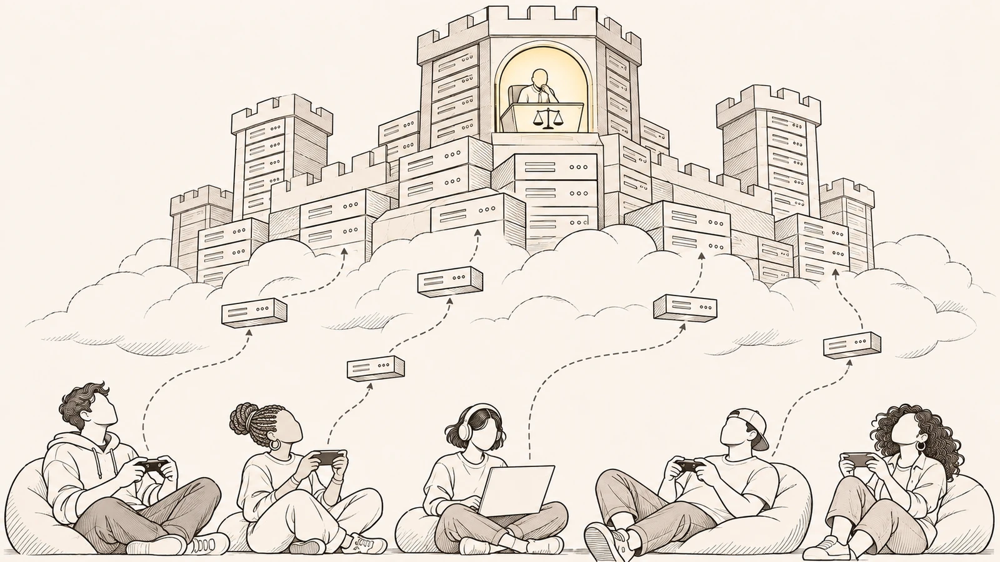
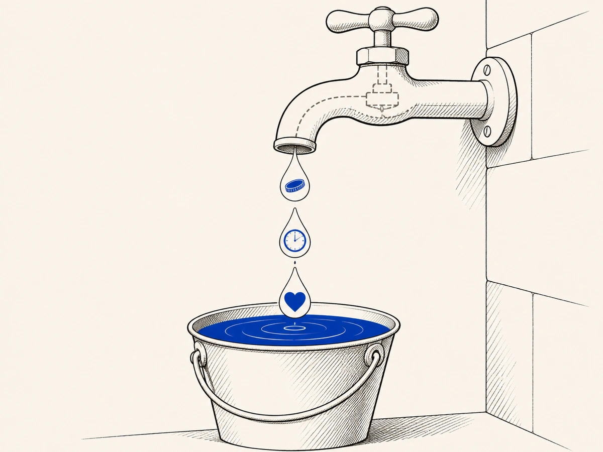

Caminho · Parte 3 de 11
De quem é o lugar onde a sua skin vale?

De onde vem
Daí a força da imagem feudal: consumidores e usuários tornam-se “servos da nuvem” não porque deixam de consumir, mas porque sua participação passa a reproduzir o próprio capital que os governa.p. 146
Quem montou a loja é a mesma empresa que controla o jogo, as regras, as atualizações e o que aparece para os outros jogadores. A skin continua na sua conta, e no papel ela é sua, mas quem decide quanto ela serve, quanto ela brilha e até quando ela vale é a plataforma.
Isso muda o que custa estar ali. Ficar não custa só o próximo pagamento, porque custa também atenção, adaptação, perda de equivalência quando as coisas mudam e uma dependência que não acaba. E a empresa não ganha só no momento da compra. Ganha administrando o lugar todos os dias, com raridade inventada, ciclos de atualização e mudanças de sentido que empurram você para mais uma rodada de gastos.
De onde vem
A plataforma opera como senhorio de infraestrutura: controla o ambiente, as regras, as atualizações e a visibilidade do que ali adquire valor.p. 146
O “capital na nuvem” aparece como domínio sobre acesso, reputação e permanência, de modo que o consumidor, embora preserve titularidade formal sobre itens vinculados à conta, permanece submetido ao poder unilateral de modular utilidade, prestígio e condições de fruição. O custo não se expressa apenas em novo pagamento, mas também em atenção, adaptação, perda de equivalência e dependência contínua do território administrado.p. 146
A renda não se extrai apenas no ato de compra, mas na gestão contínua do território digital, onde escassez artificial, ciclos de atualização e reconfiguração de signos reorganizam desejos e empurram o sujeito para novas rodadas de gasto e recomposição de status.p. 146
Economia políticaTecnofeudalismo
No feudo havia senhores, que eram donos da terra, e servos, que viviam e trabalhavam nela segundo as regras do senhor. Há quem diga que hoje a terra virou nuvem. Os donos dos servidores, das plataformas e dos algoritmos fazem o papel dos novos senhores, e quem usa esses lugares vive segundo as regras deles.
Você não deixa de consumir por causa disso. O ponto é que, cada vez que participa, ajuda a fazer crescer o mesmo poder que governa você. É por isso que se fala em servos da nuvem. E, no caso do jogo, o feudo nem é uma figura de linguagem, porque ele tem nome e endereço, que é a sua conta.
De onde vem
O autor argumenta que o sistema capitalista estaria em vias de ser substituído pelo que denomina “tecnofeudalismo”, no qual o capital deixa de se apresentar prioritariamente como propriedade material e passa a concentrar-se “na nuvem”, isto é, em ativos digitais, plataformas online e algoritmos.p. 142
O autor reintroduz uma gramática feudal para descrever o presente, na qual os proprietários do capital na nuvem figuram como novos senhores feudais, enquanto os demais retornam à condição de servos.p. 151
Daí a força da imagem feudal: consumidores e usuários tornam-se “servos da nuvem” não porque deixam de consumir, mas porque sua participação passa a reproduzir o próprio capital que os governa.p. 146
O feudo não é uma metáfora do ambiente digital. Ele é uma conta.p. 153
Por que a skin não é como uma geladeira?
Numa compra comum é diferente. Quando você compra uma geladeira, ela vai para a sua casa e passa a existir longe do alcance de quem vendeu, pelo menos enquanto durar o que se espera de uma geladeira. A loja ganha uma vez e pronto.
Com a skin não é assim, porque ela só funciona dentro de um lugar que você não controla. Ela atravessa atualizações, ajustes de equilíbrio, fim de eventos, troca de catálogo, mudanças na moeda do jogo e novas políticas. Por isso a plataforma não ganha só com a entrega da skin. Ganha também controlando o acesso e o tempo, ou seja, cobrando pela passagem, pela permanência e pela previsibilidade de um lugar que ela mesma governa.
De onde vem
Na economia industrial, o consumidor paga para adquirir um bem cuja existência, uma vez comprada, tende a se estabilizar fora do alcance do fornecedor, ao menos dentro de expectativas razoáveis de durabilidade e de disciplina dos vícios.p. 210
O consumidor não compra uma “coisa” e a leva consigo; ele ingressa em um regime de acesso em que o objeto se mantém funcional apenas dentro da infraestrutura que não controla, atravessado por atualizações, balanceamentos, encerramentos de eventos, rotatividade de catálogo, reconfigurações de moeda interna e mudanças de políticap. 210
A consequência é que a plataforma deixa de monetizar apenas a entrega de um bem e passa a monetizar o controle do acesso e do tempo.p. 209
Ela não vende uma “coisa”, vende passagem, permanência e previsibilidade em um ambiente por ela mesma governadop. 209
Economia políticaEconomia de pedágio
Há quem ganhe menos pelo que entrega e mais porque todo mundo é obrigado a passar pela catraca dele. Os serviços podem até ser úteis, mas o lucro vem principalmente do ponto de passagem que ninguém consegue evitar.
No jogo, esse pedágio não é cobrado uma vez só. A plataforma cobra pela entrada, cobra pela pressa de quem quer chegar antes, cobra pela comodidade, cobra pelo que distingue você dos outros e cobra pela volta de um item que tinha saído. E, acima de tudo, cobra pela proteção contra um risco que ela mesma criou, como o medo de perder a próxima janela.
De onde vem
Os rentistas ganham não tanto pelos serviços que prestam, como pela obrigação de todos passarem pelas suas catracas.p. 185
Muitos serviços são úteis, ou até necessários, mas geram lucros desproporcionais relativamente ao aportep. 185
A plataforma monetiza o acesso em camadas: cobra pelo ingresso, cobra pela aceleração, cobra pela conveniência, cobra pela diferenciação simbólica, cobra pelo retorno e, sobretudo, cobra pela mitigação do risco que ela mesma fabrica.p. 210
O pedágio não se apresenta apenas como preço de entrada. Ele reaparece como cobrança reiterada pela permanência, organizada em torno do tempo, da atenção e da previsibilidade de ciclos.p. 210
Quem decide quanto vale a moeda do jogo?
A moeda do jogo, aquela que você compra com dinheiro de verdade para depois trocar por skins, mostra o mesmo poder. Os termos de uso admitem que a empresa pode, às vezes, mudar o que essa moeda compra, inclusive pedindo mais moedas pela mesma skin. Quem define a moeda, o catálogo e o preço é a mesma empresa, e por isso ela consegue subir aos poucos os preços lá dentro sem enfrentar a concorrência de um mercado aberto.
O mesmo contrato dá um passo além e diz que os dados guardados nos servidores da empresa, inclusive o conteúdo da sua conta, não têm valor nenhum. O efeito é direto. Se no papel o seu acervo não vale nada, a inflação lá dentro passa por coisa natural, e não por uma perda que você sofreu. E, como se não bastasse, o contrato tenta limitar a responsabilidade da empresa ao que você pagou nos doze meses anteriores ao problema, justamente num lugar em que o valor vem de anos de acúmulo.
De onde vem
O termo admite que, “às vezes”, a empresa pode alterar o poder de compra da Moeda do Jogo, inclusive aumentando o número de moedas necessárias para adquirir produtos virtuais como skins, e coloca esse movimento sob a promessa genérica de aviso e de progressividade (Riot Games, 2024e).p. 176
Ao definir o catálogo, modular escassez, gerir janelas de oportunidade e operar moedas internas, pacotes e conversões, o fornecedor passa a calibrar o nível geral de valores praticados, elevando gradualmente referências de preço e deslocando ancoragens de aceitabilidade sem enfrentar a disciplina típica de mercados com oferta e demanda abertasp. 176
O contrato nega expressamente qualquer valor atribuído a dados residentes nos servidores operados ou controlados pela Riot, incluindo Conteúdo do Jogo e Conteúdo Virtual associado à conta.p. 176
Se o acervo é juridicamente descrito como não tendo valor, a inflação interna e a perda do poder de compra passam a ser tratadas como variação natural do feudo, não como deterioração de uma posição econômica relevante para o consumidorp. 176-177
A cláusula de limitação prevê que a responsabilidade total pode ser limitada aos valores pagos pelo usuário nos 12 meses anteriores ao surgimento da causap. 177
A plataforma reserva o poder de governar valor, moeda e acesso dentro do território, mas tenta rebaixar a resposta civil por perdas a um cálculo que ignora justamente o que torna o feudo eficiente, que é o acúmulo prolongado, a dependência e o custo de saídap. 177
Como pequenas perdas viram uma conta grande?
Uma torneira pingando funciona assim. Cada gota não parece nada, mas no fim do mês a conta chega. Muitas plataformas não vivem só de cobranças grandes e visíveis. Vivem também de pequenos eventos, pequenas decisões e pequenas perdas, espalhados por milhões de pessoas e quase invisíveis um a um.
Somados, eles pesam muito. Mas cada um fica pequeno demais para valer uma briga, e é aí que está o truque. O lucro vem da repetição em escala, sempre abaixo do ponto em que alguém se daria ao trabalho de reclamar ou de punir.
De onde vem
O motor de muitos ecossistemas digitais não é apenas a cobrança ostensiva, mas a drenagem por microeventos, microdecisões e microperdas, distribuídas em escala e diluídas a ponto de se tornarem quase invisíveis, embora cumulativamente relevantes.p. 26
[...] a fronteira entre lícito e ilícito deixa de funcionar como proibição eficaz e passa a operar como parâmetro de otimização do próprio modelo de negócio, no qual o lucro se realiza não por margem alta em poucas unidades, mas por escala e repetição abaixo do limiar punívelp. 26
[...] mas sim os pulveriza e os terceiriza, convertendo custos, fricções e reveses em um ruído aceitável por unidade e, por isso, difícil de contestar por percepção individualp. 26

De onde vem
O motor de muitos ecossistemas digitais não é apenas a cobrança ostensiva, mas a drenagem por microeventos, microdecisões e microperdas, distribuídas em escala e diluídas a ponto de se tornarem quase invisíveis, embora cumulativamente relevantes.p. 26
Quem decide quando uma skin fica rara?
Como algo que se copia de graça fica raro? Uma skin digital poderia ser vendida a todo mundo, para sempre, sem acabar. Se ela some, volta só às vezes ou vira última chance, isso não é natureza do objeto. É escolha da empresa.
A plataforma cria janelas de venda, rotações de loja, níveis de raridade, eventos de temporada, passes, contagens regressivas e pacotes limitados. Depois transforma esse arranjo numa história, com palavras como raro, exclusivo, última chance, colecionável e edição especial. Assim, o que não era escasso passa a ser, por desenho.
De onde vem
Em objetos digitais, o custo marginal de reprodução tende a cair drasticamente e, em tese, a disponibilidade poderia expandir-se sem exigir capacidade produtiva comparável à fábrica, à logística e à extração de insumos.p. 209
Por isso, quando se observa nesses mercados um regime persistente de indisponibilidade, exclusividade e última chance, não se está diante de condição natural do objeto, mas de escolha institucional deliberada, de modo que a escassez não aparece como fato, mas como projetop. 209
A plataforma cria janelas, rotações, tiers, eventos sazonais, passes, contagens regressivas, pacotes limitados e mecanismos de aquisição condicionada. Em seguida, converte esse arranjo em narrativa, falando em “raridade”, “exclusivo”, “última chance”, “colecionável” e “edição especial”.p. 209
O não-escasso é transformado em escasso por desenhop. 209
E quando a skin exclusiva volta mais barata?
Uma skin é vendida caro porque é exclusiva, e a exclusividade faz parte do preço. Meses depois, a mesma skin volta numa loja alternativa, numa moeda especial ou numa promoção agressiva, por bem menos. E ninguém tinha avisado você, de um jeito claro, na hora da compra, que a exclusividade tinha prazo.
Nesse caso, o valor do que você recebeu foi refeito para trás, e a sua expectativa legítima foi frustrada. Isso pode ser tratado como publicidade enganosa por omissão e como descumprimento da oferta. A resposta pode incluir devolver o que foi pago, abater o preço ou compensar com algo que cumpra a mesma função, e ainda perdas e danos se houver prejuízo a mais. Não é desconforto seu, é uma perda que a lei do consumidor sabe tratar.
De onde vem
Se, passado um período, o mesmo item reaparece em loja alternativa, em moeda especial, em promoção agressiva ou por preço significativamente inferior, e se a limitação temporal da exclusividade não foi informada de modo adequado e compreensível no momento da aquisição, ocorre reconfiguração retroativa do valor entregue, com frustração de expectativa legítima e violação de transparência.p. 214
A escassez, aqui, pode operar como expediente de captação de consentimento sob inadequação informativa, com potencial enquadramento como publicidade enganosa por omissão e descumprimento da ofertap. 214
A consequência jurídica não se esgota em desconforto subjetivo, pois a alteração posterior do atributo que justificou o preço pode demandar recomposição material por vias típicas do consumo, por restituição, abatimento ou compensação funcional equivalente, e pode ainda abrir espaço para perdas e danos quando demonstrado prejuízo adicional decorrente do engano posicional.p. 214
E de que risco você precisa se proteger? Não é o de a skin quebrar, como uma geladeira com defeito. É o risco de ficar para trás, de não pertencer, de perder status, de ver a skin que você queria sair de circulação e de ver a imagem que você construiu lá dentro perder valor.
Esse risco não é natural, porque é calibrado pela plataforma. Ela organiza o tempo em temporadas, metas e missões, roda o catálogo, cria sistemas de progresso que exigem horas de repetição e aplica punições automáticas. As missões mostram bem o mecanismo, porque funcionam na base do faça algo e receba algo e transformam o seu tempo em moeda sem nunca chamar isso de trabalho. Ninguém obriga você a comprar, e mesmo assim a pressão está lá, feita de dependência e de medo de perder. O consumo vira administração de ansiedade.
De onde vem
Em ambientes de fruição contínua, o risco mais eficaz não é o risco do produto “não funcionar”, que corresponderia a uma gramática clássica de vício de qualidade por inadequação.p. 211
O risco decisivo é o risco de perda de oportunidade, o risco de ficar para trás, o risco de não pertencer, o risco de perder status, o risco de ver o objeto desejado sair de circulação e o risco de a identidade simbólica construída no ecossistema sofrer depreciação. Esse risco não é natural.p. 211
Ele é calibrado pela plataforma por meio de uma arquitetura temporal, com temporadas, splits, metas e missões. Também é calibrado por uma arquitetura de oferta, com rotatividade, exclusões programadas e catálogos variáveis. Soma-se uma arquitetura de recompensa, com sistemas de progressão e grind, e uma arquitetura sancionatória, com banimentos, restrições, penalidades automatizadas e políticas opacas.p. 211
Em termos de economia política, é o gesto típico de transformar tempo em moeda sem jamais chamá-lo de trabalhop. 211
A coerção não aparece como violência, nem como proibição direta, nem como imposição explícita de comprap. 210
O consumo, nesse registro, vira administração de ansiedade.p. 210
Teleologia arquiteturalTeleologia arquitetural
Teleologia quer dizer finalidade, aquilo para o que uma coisa serve. Aqui, a palavra diz que nada disso é acidente de marketing. São escolhas de desenho que apontam para uma direção, que é tirar mais valor de quem está ali, e não só organizar bem algo que fosse naturalmente limitado.
Essa finalidade não fica escondida num documento secreto. Ela aparece no jeito como a tela organiza o que você vê, o que você calcula e o risco que você sente. E ganha importância para o direito quando deixa de ser só estratégia comercial e passa a esconder ou frustrar a correspondência entre o que foi prometido e o que foi entregue.
De onde vem
[...] a assimetria não se limita ao “melhor conhecimento” do fornecedor. Ela se materializa na própria capacidade do fornecedor de definir o que existe, por quanto tempo existe, em que condições existe e sob quais narrativas existe [...] Por isso, a escassez artificial deve ser compreendida como parte de uma teleologia arquitetural. Ela integra um conjunto de escolhas de design orientadas à extração e não à simples organização eficiente de um recurso naturalmente limitadop. 214
Ela integra um conjunto de escolhas de design orientadas à extração e não à simples organização eficiente de um recurso naturalmente limitado, e é nesse limiar que deixa de ser apenas estratégia comercial para se tornar categoria juridicamente relevante à qualificação do desvio de finalidade quando a equivalência entre promessa e entrega é tornada opaca ou deliberadamente frustradap. 214
A teleologia arquitetural não se manifesta apenas em cláusulas e políticas, mas na forma como a interface organiza visibilidade, cálculo e risco.p. 214
Economia políticaTrabalho invisível
E tem o trabalho que ninguém chama de trabalho. Você testa versões novas do jogo antes de saírem, aponta falhas, manda sugestões, posta, comenta, cria memes, escreve guias, grava vídeos e faz transmissões. Tudo isso dá visibilidade ao jogo, explica o catálogo para os outros e mantém o desejo aceso.
Para a empresa, isso vale muito, porque reduz o custo de testar o jogo e funciona como propaganda. Mas o contrato trata as suas ideias como algo que a empresa pode usar livremente, sem pagar nada. E quem faz isso como criador de conteúdo parece um pequeno empreendedor independente, quando na prática funciona como a face pública do próprio negócio, sob regras que a empresa pode mudar ou retirar. É produção que aparece como participação.
De onde vem
O usuário, aqui, não é só medido, ele é mobilizado como força de trabalho distribuída que reduz custo de controle de qualidade, amplia a superfície de detecção de bugs e alimenta a inteligência organizacional do fornecedor, produzindo uma produtividade que não aparece como trabalho, mas como participaçãop. 218
Na Política de envio de ideias não solicitadas, o fornecedor declara “valorizar” feedback, mas simultaneamente estrutura o regime de apropriação, ao reservar para si o uso livre de ideias, sugestões e materiais criativos enviados pelo usuário, sem que isso gere contrapartida econômica, indenização ou dever de reconhecimentop. 218
gerado pelo próprio usuário, como posts, comentários, transmissões, memes, guias e avaliações, que se converte em motor de visibilidade e recomendação e funciona, na prática, como trabalho invisível de produção e de marketing do OICp. 219
Entre as formas mais ostensivas desse trabalho invisível está o trabalho dos criadores de conteúdo, streamers e influenciadores que orbitam o ecossistema como se fossem “microempreendedores” autônomos, quando, na prática, funcionam como uma face pública intensa do exterior incorporado.p. 219
a própria possibilidade de monetizar conteúdo dependem de regras privadas, revogáveis e seletivasp. 219
Economia políticaLumpemproletariado digital
Quem produz valor assim fica num lugar estranho. Participa muito da produção, mas fora de qualquer categoria de trabalho, de emprego ou de prestação de serviço. Não tem contrato, não tem salário e não é reconhecido como alguém que trabalha.
Ao mesmo tempo, o seu progresso, o seu status, a sua reputação e até o seu acesso dependem das decisões de outro, como acontece com um trabalhador que vive sob condições definidas pelo patrão. A palavra lumpemproletariado nomeia quem trabalha à margem, sem os direitos de quem trabalha. Aplicada aqui, ela descreve alguém que é consumidor e, ao mesmo tempo, mão de obra, sem que o direito enxergue essa segunda parte.
De onde vem
O consumidor-usuário de plataformas encontra-se formalmente fora da relação salarial e fora das categorias clássicas de trabalho que sustentaram a dogmática industrial, mas ele é materialmente incorporado ao regime de valorização como fonte constante de produtividade difusa e como base de sustentação do pedágio. Desse ponto de vista, o consumidor aproxima-se de um lumpemproletariado digital: participa intensamente da produção de valor, mas o faz em um plano opaco, fora das categorias tradicionais de trabalho, contrato de emprego ou prestação de serviços.p. 223
Quando o progresso, o status, a reputação e a própria continuidade de acesso ao Objeto Imaterial de Consumo se tornam dependentes de decisões unilaterais da plataforma, o consumidor se vê em posição análoga à do trabalhador submetido a condições de vida definidas por outrem, mas sem que o direito o reconheça como tal.p. 223
O “servo da nuvem” produz sem contrato, sem salário e sem reconhecimento como trabalho.p. 223
[...] mas como manifestações de um arranjo estrutural comum, marcado por tecnofeudalismo de plataformas, rentismo digital e uma forma específica de exploração do consumidor que, contextualmente, também se caracteriza como força de trabalho externa incorporada (o “consumidor-trabalhador”)p. 143
Economia políticaPropriedade intelectual como cerca
A propriedade intelectual é o conjunto de direitos que protege criações, como o desenho de uma skin, a música de um jogo e o código que faz tudo funcionar. Ela existe para incentivar quem cria. Mas, num jogo online, ela faz mais do que proteger a obra. Ela ajuda a empresa a definir quem pode usar o quê, por quanto tempo e em que condições.
Quando esses direitos se juntam a licenças, contas, travas contra cópia, catálogos e senhas, o incentivo a criar pode virar uma cerca. Circular vira infração e aproveitar vira autorização. Por isso a propriedade intelectual não aparece aqui como um detalhe de fora, e sim como uma peça da própria estrutura que fecha o jogo e o seu acervo dentro dele. E a disputa entre empresas muda, porque deixa de ser por produto melhor e passa a ser por quem cerca mais e prende melhor.
De onde vem
Uma vez estabilizado, o código tende a se reproduzir por inércia institucional, por dependências de trajetória e por mecanismos jurídicos e econômicos que encarecem alternativas e reapropriações. Nesse cenário, a propriedade intelectual comparece como infraestrutura de governança semiótica e técnica. Ela não apenas protege criações, mas contribui para delimitar usos, restringir reconfigurações e consolidar a autoridade do fornecedor sobre as condições de fruiçãop. 130
Quando essa decisão se acopla a contratos de licença, contas, DRMp. 234
catálogos e mecanismos de autenticação, o incentivo à criação cede espaço a uma tecnologia de bloqueio, o que faz com que a circulação seja tratada como infração e a fruição se converta em autorização. Nesse contexto, a concorrência deixa de ser apenas disputa por produto e passa a ser disputa por cercamentos.p. 234
É aqui que os direitos de propriedade intelectual deixam de aparecer como título jurídico periférico e passam a operar como componente material da arquitetura de fechamento.p. 234
A mutação concorrencial descrita se manifesta com nitidez no entretenimento interativo operado por plataforma porque o valor competitivo não se concentra na “qualidade” de um bem isolado, mas na capacidade de manter o consumidor preso a uma gramática proprietária de pertencimento, progresso e distinçãop. 232
Cativeiro identitárioCativeiro identitário
Então por que não ir embora? Porque sair custa mais do que dinheiro. Ao sair, você perde o reconhecimento, a reputação e a história que construiu ali, registrada em ranques, acervos, históricos e sinais de distinção que só existem dentro daquele jogo.
Essa dependência não é fraqueza sua nem coisa da sua cabeça. Ela vem do jeito como o lugar é montado, porque é a plataforma que define o que conta como valor, como pertencimento e como progresso, e que pode rebaixar ou apagar tudo isso. Com o tempo, o pedágio deixa de ser o preço de um item e vira a taxa que mantém o seu lugar. Dar nome a isso não cria um bem novo. Serve para que essa forma de perda possa ser vista e controlada.
De onde vem
[...] reforçando um circuito de permanência que converte a participação do indivíduo em um insumo de valorização para a plataforma. Esse efeito pode ser nomeado, com precisão operacional, como cativeiro identitário, entendido como modalidade de dependência em que o custo de saída não se reduz ao plano patrimonial, mas envolve perda de reconhecimento, de reputação e de continuidade narrativa objetivada em registros públicos de desempenho, acervos, históricos e sinais de distinção produzidos no interior do ecossistema.p. 224-225
A dependência, nesse registro, não é psicológica no sentido individualizante, mas institucional e semiótica, porque decorre de um regime de visibilidade e de sanção que define o que conta como valor, pertença e progresso legítimo e, correlatamente, define como isso pode ser rebaixado, apagado ou desautorizado.p. 225
Em termos jurídico-consumeristas, a relevância do conceito não é criar um bem novo, mas tornar controlável uma forma específica de perda no fato do consumop. 225
O resultado é um cativeiro identitário, no qual o pedágio se estabiliza como taxa de manutenção do lugar, não como preço pontual de um item.p. 258
Então ter loja, moeda e itens raros é ilegal?
Nada disso torna ilegal ter uma loja, uma moeda própria, eventos ou itens raros. Criar escassez é estratégia comercial, e a estratégia, sozinha, não é ilícita. Ela passa a importar para o direito quando esconde ou frustra a correspondência entre o que foi prometido e o que foi entregue, como no caso da exclusividade que tinha prazo e ninguém avisou.
De onde vem
Por isso, a escassez artificial deve ser compreendida como parte de uma teleologia arquitetural. Ela integra um conjunto de escolhas de design orientadas à extração e não à simples organização eficiente de um recurso naturalmente limitado, e é nesse limiar que deixa de ser apenas estratégia comercial para se tornar categoria juridicamente relevante à qualificação do desvio de finalidade quando a equivalência entre promessa e entrega é tornada opaca ou deliberadamente frustradap. 214
Não se trata de investigar intenção psicológica subjetiva de agentes empresariais, nem de moralizar toda forma de monetização, persuasão ou governança privadap. 732
O que você pode exigir?
Ser dona da obra não é desculpa para tudoSer dona da obra não é desculpa para tudo
- Quando os direitos sobre o jogo viram escudo?
Quando a empresa usa os direitos que tem sobre o jogo para resistir a qualquer controle sobre o jeito como fornece o que você comprou. Entram aí direitos autorais, segredos de negócio, licenças e o controle sobre o próprio sistema.
Vale entender o papel desses direitos. A propriedade intelectual não aparece aqui só como um obstáculo vindo de fora. É ela que ajuda a empresa a definir o que pode ser usado, por quanto tempo e em que condições. Ela protege a criação, mas também firma a autoridade da empresa sobre o modo como você usa o que comprou. Por isso faz parte da própria estrutura do que é vendido.
- Como a empresa deve usar a exclusividade?
A plataforma deve usar a exclusividade sem transformá-la em escudo para esconder tudo, piorar o que você comprou ou tirar o seu acesso sem razão. A conta entre os direitos da empresa e os seus se faz pela função social, segundo a qual esses direitos existem também para servir ao interesse da sociedade. E se faz pelos limites que a Constituição impõe a quem exerce poder privado.
- Como mostrar se a restrição protege o jogo ou só blinda a empresa?
Ajuda mostrar se a restrição que a empresa invoca é mesmo necessária para proteger o jogo e a obra, ou se está servindo para blindar o jeito como ela governa o ambiente.
- O que pedir quando a empresa invoca a obra?
Você pode pedir que a lei do consumidor continue valendo. Na prática, isso pode significar um exame delimitado dos registros, que preserve os segredos, e o controle da equivalência do que você comprou. Pode significar também que a empresa respeite os deveres de adequação, transparência e recomposição. E, se o jogo for encerrado, que a saída venha, tanto quanto for possível, com transição, preservação ou transferência do que você tinha lá dentro.
- A empresa perde os direitos sobre o jogo?
Os direitos de propriedade intelectual sobre o jogo, a arte e o código continuam protegidos. Ninguém pede que a empresa abra mão da obra. O que se discute é usar essa exclusividade como veto geral contra a proteção do consumidor.
De onde vem
Sempre que a plataforma invocar titularidade exclusiva, segredo empresarial, licenciamento ou estrutura proprietária do ecossistema para resistir ao controle do modo de fornecimento, a compatibilização deverá ser feita à luz da função social e dos limites constitucionais do exercício das posições privadas.p. 747
Ao contrário, subordina expressamente a garantia legal do privilégio sobre inventos industriais e da proteção às criações industriais, marcas, nomes de empresa e outros signos distintivos ao interesse social e ao desenvolvimento tecnológico e econômico do Paísp. 702
Nesse cenário, a propriedade intelectual comparece como infraestrutura de governança semiótica e técnica. Ela não apenas protege criações, mas contribui para delimitar usos, restringir reconfigurações e consolidar a autoridade do fornecedor sobre as condições de fruiçãop. 130
Licenças e restrições técnicas não são tratadas apenas como conteúdo contratualp. 54
que delimita o que pode ser usado, por quanto tempo, em que condiçõesp. 54
O dever correspondente é o de exercer a exclusividade sem convertê-la em escudo para opacidade absoluta, mutabilidade degradante ou supressão arbitrária da fruição.p. 747
A prova mínima exigível recai sobre a relação entre a prerrogativa invocada e o aspecto concreto do conflito, demonstrando-se se a restrição é realmente necessária à proteção do ativo ou se opera, em verdade, como imunização indevida da governança.p. 747
A qualificação jurídica possível preserva a validade da propriedade intelectual em seu plano próprio, mas afasta sua invocação como veto geral à incidência do CDC.p. 747
consequência institucional consiste em compatibilizar exclusividade e tutela consumerista por meio de auditabilidade delimitada, controle da equivalência funcional e sujeição do exercício da PI aos deveres de adequação, transparência e recomposição.p. 748
O direito de explorar, encerrar ou reorganizar atividade econômica não se confunde com um suposto direito de aniquilar, sem deveres de transição, preservação ou transferência, a fruição funcional já estabilizada na esfera do consumidor.p. 709
Se a plataforma é dona do lugar, da moeda e do relógio, quem escreve as regras que valem lá dentro?